This is Somes Island
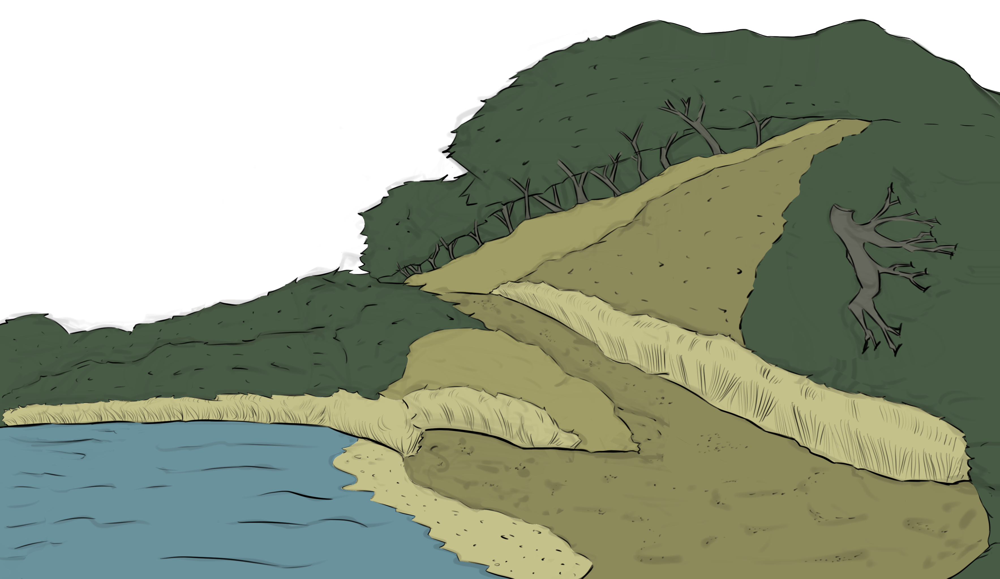
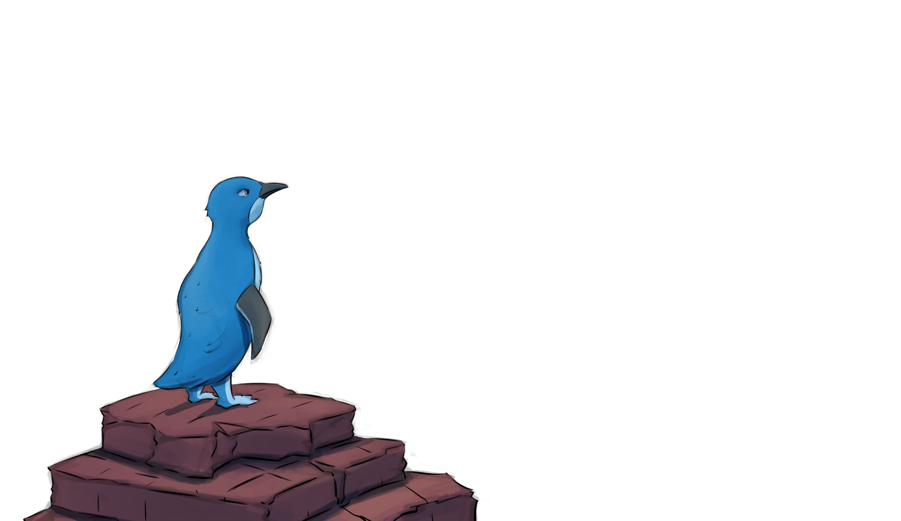
Once a place served as a human and quarantine station.
Once hosted an interment camp, and military defence position.
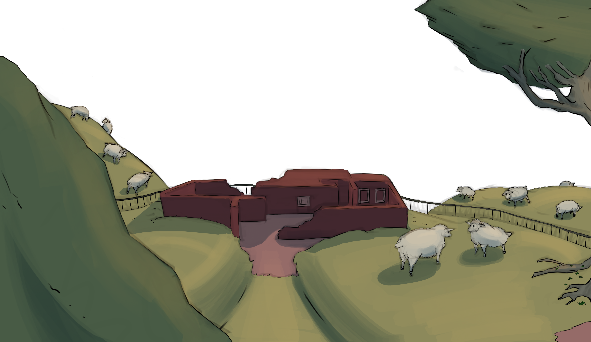
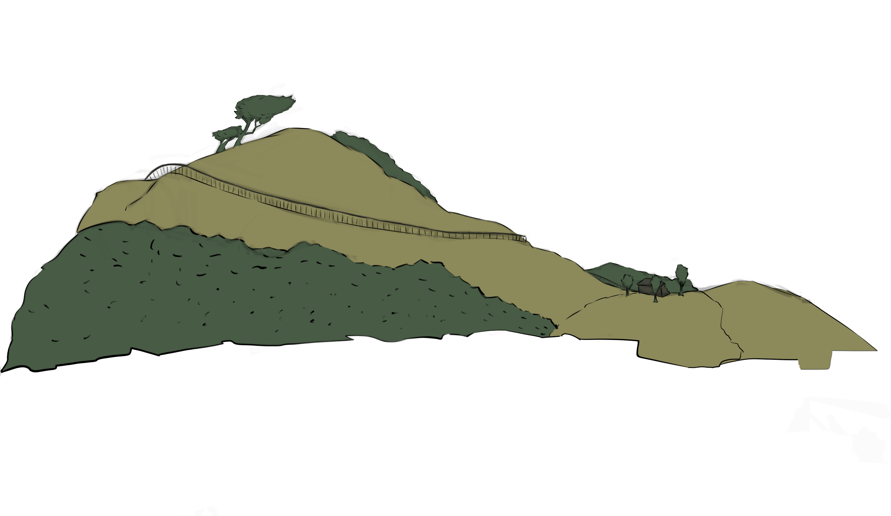
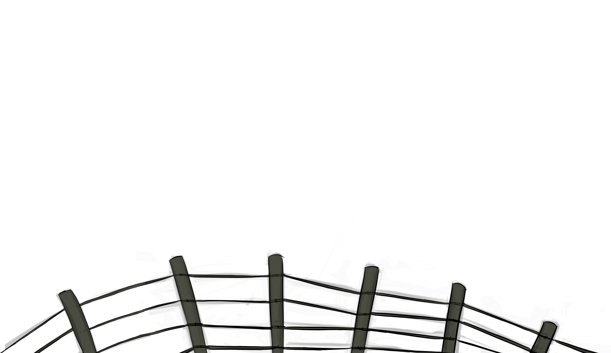
There's an irony to how comfortable animals live on this island.
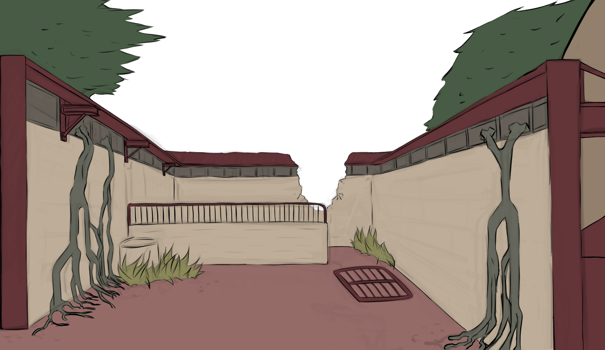
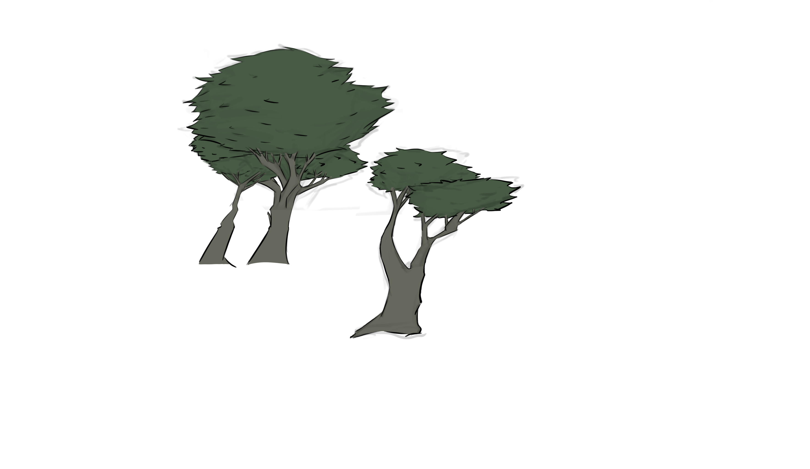
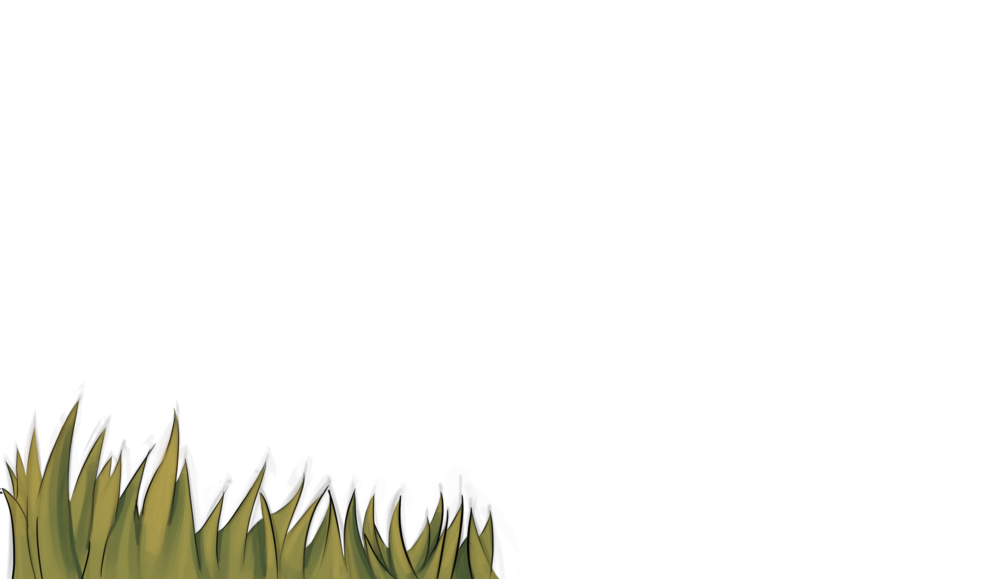
It's also ironic to how morbid areas
could feel so peaceful.
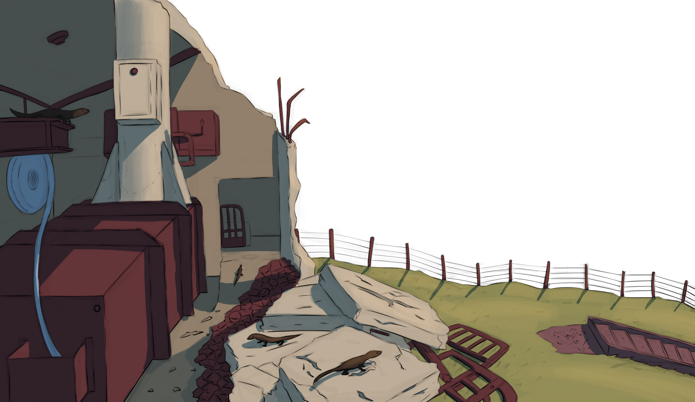
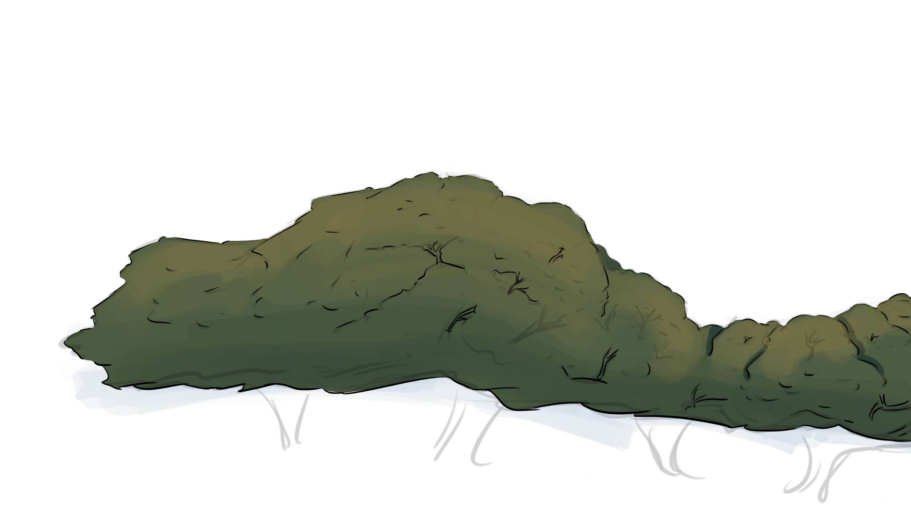
could feel so peaceful.

Interesting how the island now represents refuge for wildlife and cultural heritage for years to come.
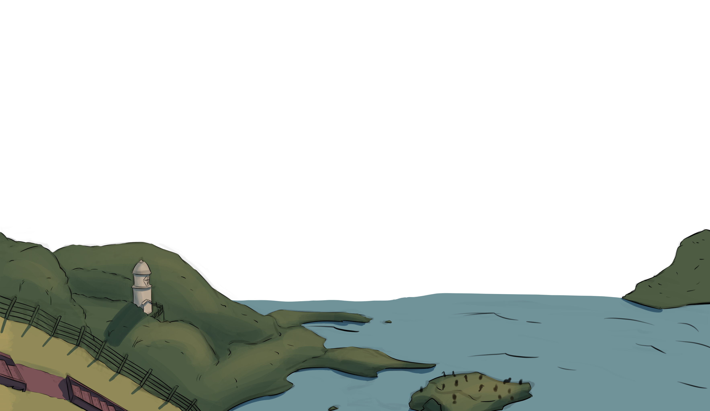
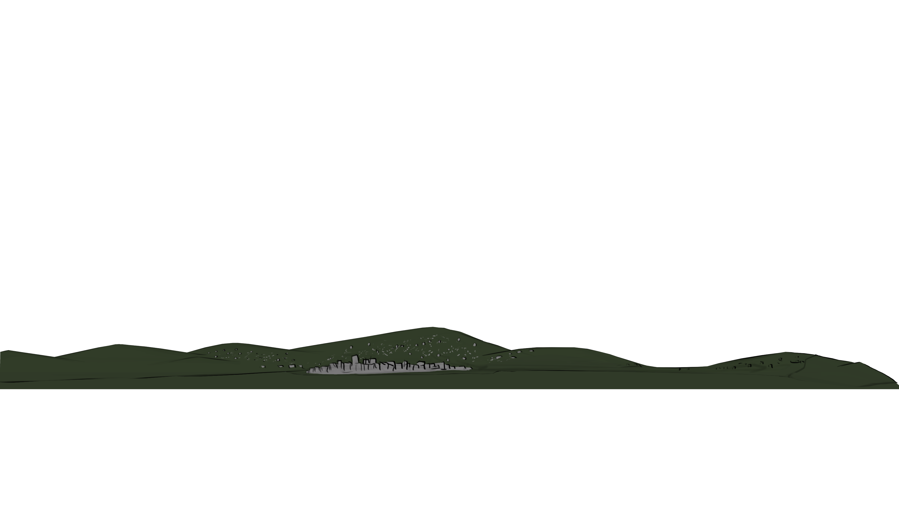

This is Somes Island